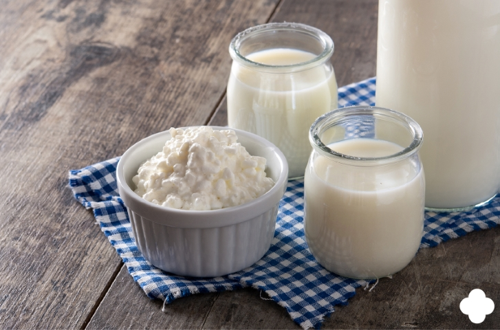

Kefir

Now lets see how we prepare some Kefir
Ingredients
Instructions
Now lets prepare Kefir
- Let the milk warm up to room temperature
- Add the fungus to a 1l bottle
- Pour the milk inside the bottle
- Stir the whole thing
- Let the fungus ferment 48h and it will be ready to drink